2 - Prerequisites
1. Security Group Configuration¶
Add self route to MSK cluster SG
- Click on Services in the top left corner of the console, and select MSK
 2. Go to the MSK (Right click -> Open Link in New Tab) and choose the cluster MSKCluster-msk-labs-default
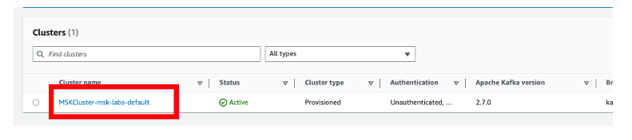
3. Click on Properties Tab and scroll down to Networking settings
2. Go to the MSK (Right click -> Open Link in New Tab) and choose the cluster MSKCluster-msk-labs-default
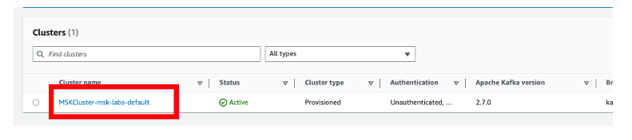
3. Click on Properties Tab and scroll down to Networking settings
4. In Networking settings, under Primary VPC configuration look for Security groups applied
5. Right click and open the Security Group in a New Tab
6. Copy the Security group name
 7. Scroll down and you will find Inbound rules, then click Edit Inbound rules
7. Scroll down and you will find Inbound rules, then click Edit Inbound rules
 8. Scroll down and Add rule: (Add a self route as below)
8. Scroll down and Add rule: (Add a self route as below)
- Type: All TCP
- Protocol: TCP
- Port range: 0 - 65535
- Source: [paste the value of the Security Group Id you copied in the step-6]
- Description: Plaintext Kafka - Lambda
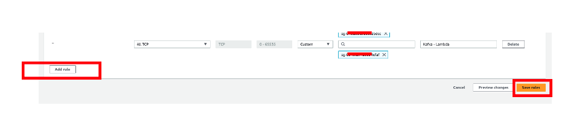 9. Click Save rules
2. Create S3 Bucket¶
This S3 bucket will be used to store athena query information and spill data information from Lambda connector setup.
- Navigate to S3 Console
- Click Create bucket

3. In General configuration, provide the Bucket name as
msk-athena-bucket-< AWS-Account-Number >
4. Scroll down completely and click Create bucket.
Leave all other configuration options as default
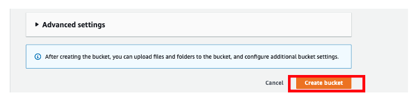
3. Configure Athena¶
This is used to configure Athena result location.
- Navigate to Athena Console and click on Launch query editor
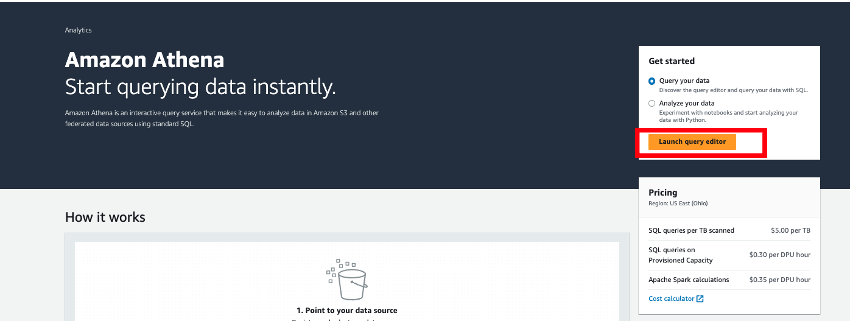 2. Click on Settings tab
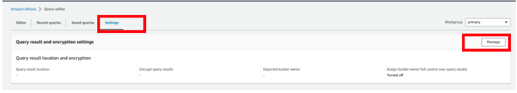
3. In Query result and encryption settings, click on Manage
4. In Query result location and encryption, click on Browse S3

5. Choose the radio button beside the bucket msk-athena-bucket-< AWS Account Number >
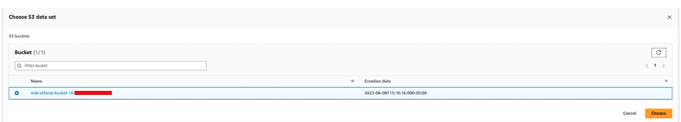 6. Click Choose 7. Add the folder path to the Location of query result as below:
- athena-spill/
- Click Save
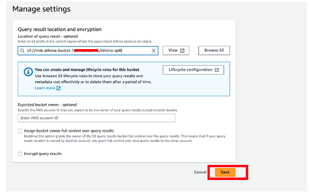
4. Setting up IAM¶
This is used to create IAM policies and IAM role for the redshift cluster
Create IAM Policy¶
Create an IAM Policy, which provides permission for communication with the Amazon MSK cluster. The policy you need depends on the authentication method used on your cluster, if you use Amazon MSK. See Authentication and Authorization for Apache Kafka APIs for authentication methods available in Amazon MSK.
- Navigate to IAM Console, Click on left pane and choose Policies in Acess management section
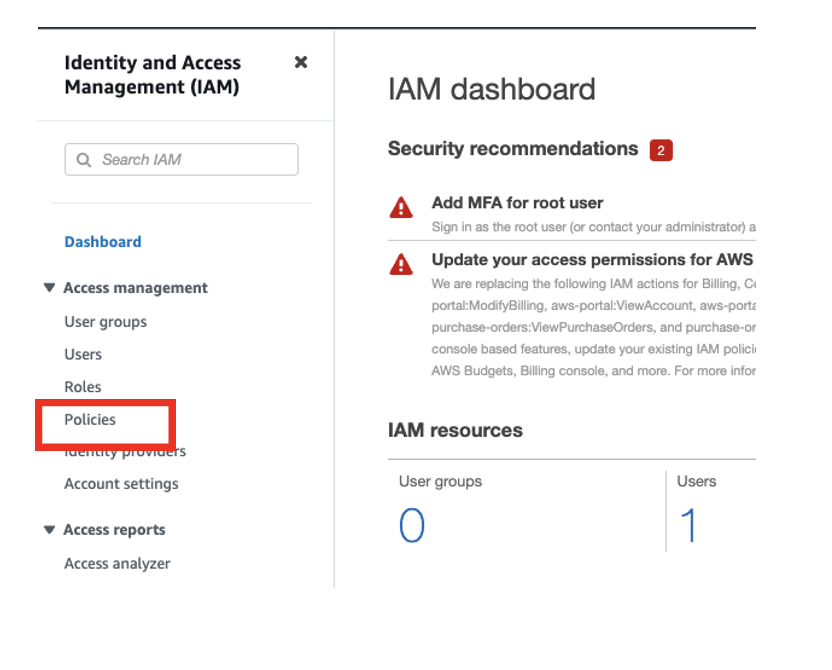 2. Click on Create policy
 3. In Policy editor, choose JSON button
3. In Policy editor, choose JSON button
 4. Copy and paste the below policy in the Policy editor section ( Overwrite the default provided policy )
4. Copy and paste the below policy in the Policy editor section ( Overwrite the default provided policy )
An IAM policy for Amazon MSK using unauthenticated access:
{
"Version": "2012-10-17",
"Statement": [
{
"Sid": "VisualEditor0",
"Effect": "Allow",
"Action": [
"kafka:GetBootstrapBrokers"
],
"Resource": "*"
}
]
}
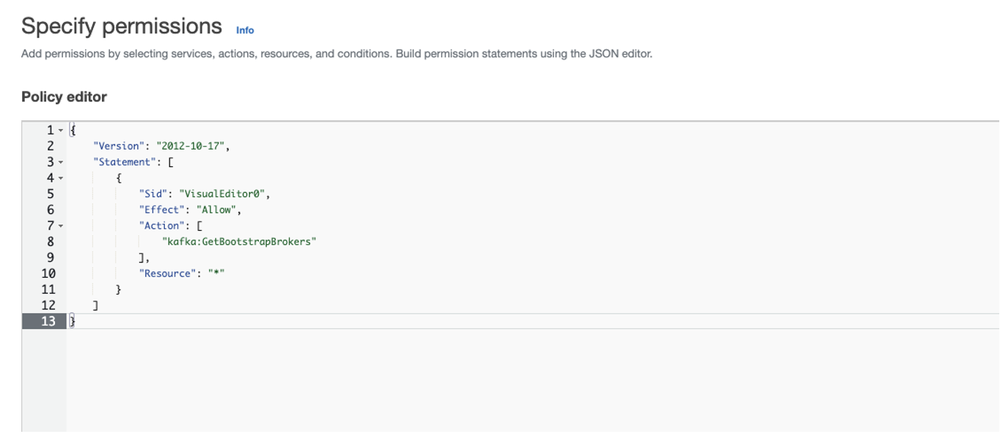 5. Click Next
 6. In Policy details, provide below details
6. In Policy details, provide below details
- Policy name: MSK-unauthenticated-access
- Description: An IAM policy for Amazon MSK using unauthenticated access
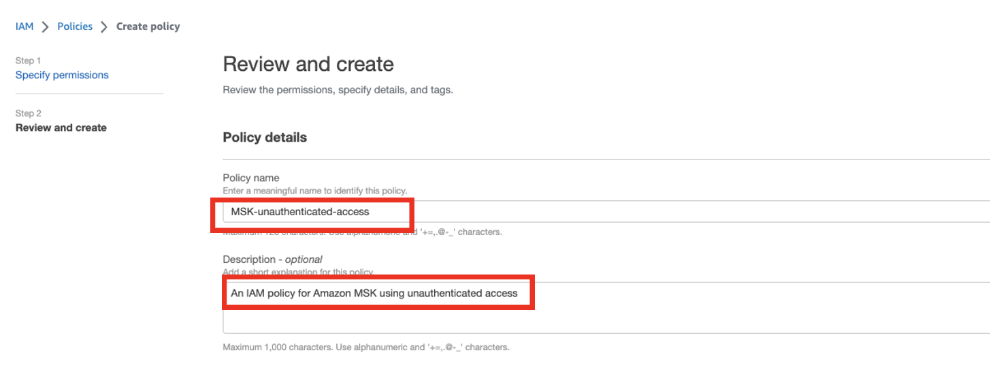 7. Click Create policy

Create IAM Role¶
Create an IAM role with a trust policy that allows your Amazon Redshift cluster to assume the role. For information about how to configure the trust policy for the IAM role, see Authorizing Amazon Redshift to access other AWS services on your behalf.
- Navigate to IAM Console, Click on left pane and choose Roles in Acess management section
 2. Click on Create role
2. Click on Create role
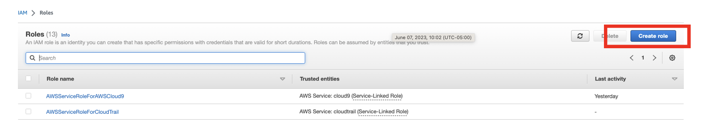
3. In Use cases for other AWS services, choose Redshift from the drop down
4. Choose Redshift - Customizable and click Next
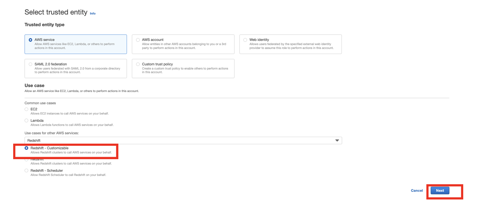 5. Select the above create policy (MSK-unauthenticated-access) and Click Next
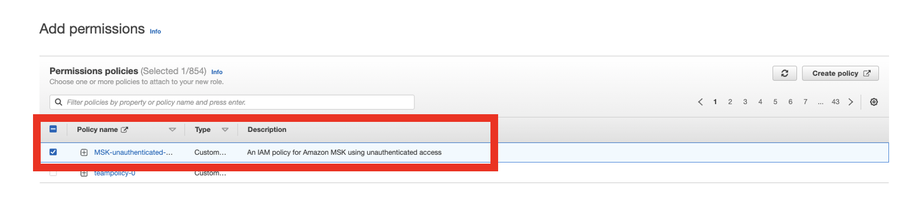 6. In Role details section, provide below details:
Role name: MSK-Redshift-role
 7. Click Create role
7. Click Create role

5. Create Redshift Subnet Group¶
- Navigate to Redshift Console, Click on left pane and choose Subnet groups in Configurations section
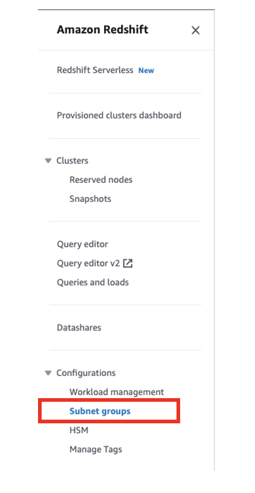
2. Click Create cluster subnet group
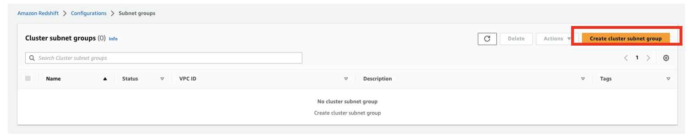 3. In Cluster subnet group details, provide below configuration details:
- Name: msk-redshift-vpc-subnet-group
- Description: This subnet group contains msk and redshift subnet groups
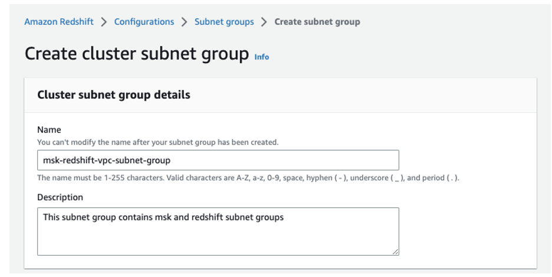 4. In Add subnets section, go to VPC drop down and choose MSKVPC
 5. Click on Add all the subnets for this VPC
5. Click on Add all the subnets for this VPC
 6. Click Create cluster subnet group
6. Click Create cluster subnet group

6. Create Redshift Cluster¶
- Navigate to Redshift Console, Click on left pane and choose Provisioned clusters dashboard and click on Create cluster
 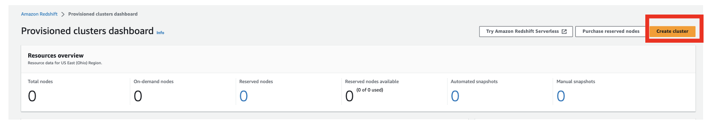
2. In Cluster configuration, provide the below details:
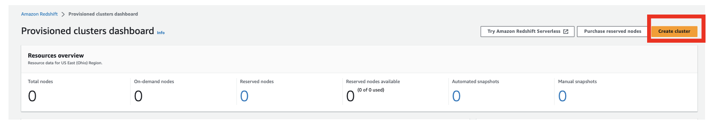
2. In Cluster configuration, provide the below details:
Cluster identifier : redshift-cluster-1
Choose the size of the cluster : I'll choose
Node type : dc2.large
Number of nodes : 1
 3. In Database configurations, provide the below details:
3. In Database configurations, provide the below details:
Admin user name : awsuser
Admin user password : < Password >
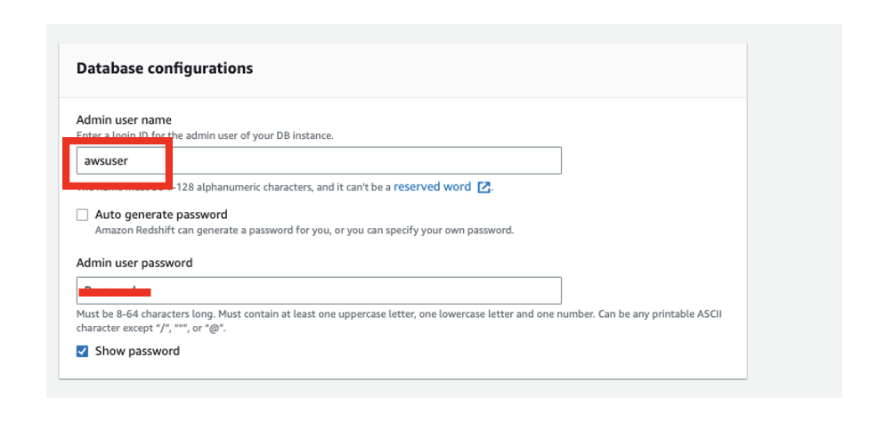 4. In Associated IAM roles, click on Associate IAM roles
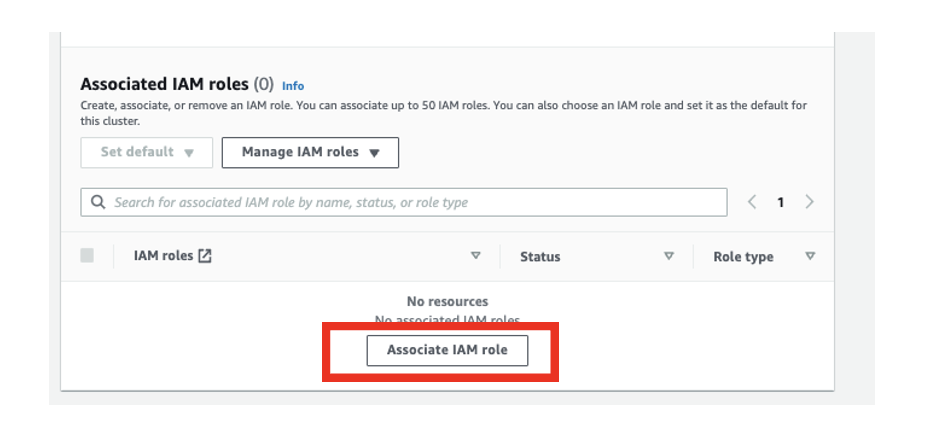 5. Select the radio button beside the IAM role msk-redshift-role and click Associate IAM roles
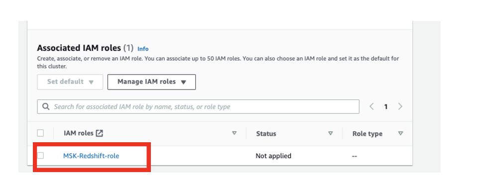 6. In Additional configurations, toggle the Use defaults option.
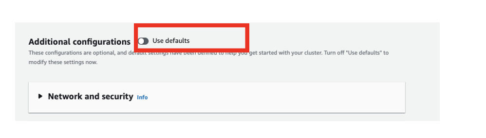 7. Expand Network and security section and provide below configuration:
Virtual private cloud (VPC) : MSKVPC
VPC security groups : msk-labs-default-MSKSecurityGroup
Cluster subnet group : msk-redshift-vpc-subnet-group
Availability Zone : us-east-2a
Enhanced VPC routing : Turn off
Publicly accessible : Check Box (True)
Elastic IP address : None
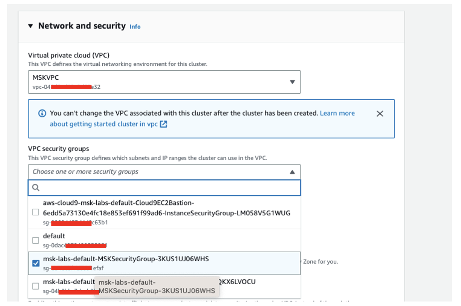 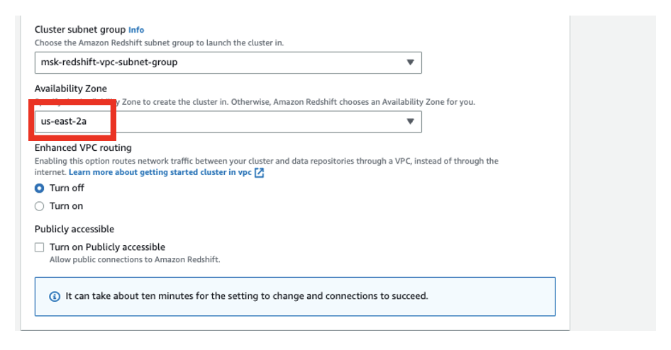 8. Click Create cluster

7. Cloud 9 Setup¶
Open Cloud9 , select the host msk-labs-default-Cloud9EC2Bastion, open Cloud9 IDE and install following tools:
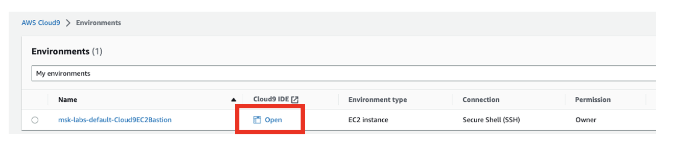
Install kafka tools¶
In this step, you install Apache Kafka client libraries and tools on the cloud9 setup:
- wget https://archive.apache.org/dist/kafka/2.6.2/kafka_2.12-2.6.2.tgz
- tar -xzf kafka_2.12-2.6.2.tgz
- ln -s kafka_2.12-2.6.2 kafka
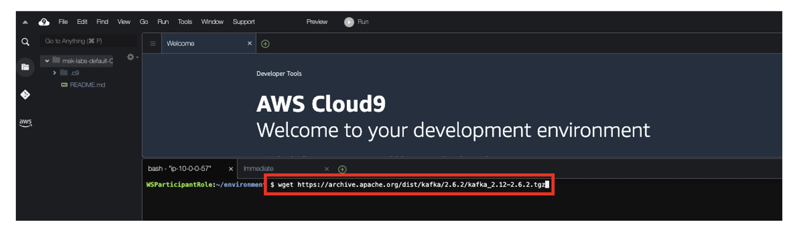

Install jq, envsubst¶
sudo yum -y install jq gettext bash-completion moreutils

8. Kafka Setup¶
Create Topic¶
- Go to the MSK (Right click -> Open Link in New Tab) and choose the cluster MSKCluster-msk-labs-default
 2. In Cluster summary, Click on View client information
2. In Cluster summary, Click on View client information
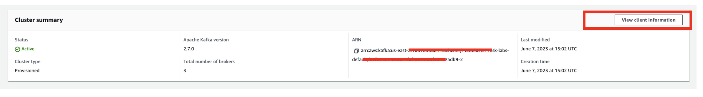 3. Copy any one of the broker-ids(connection string for the private endpoint) from Authentication type - Plaintext
Note: You will get three endpoints for each of the brokers. You only need one broker endpoint for the following step.
 4. Go to the EC2 console and open aws-cloud9 instance properties by clicking on it.Copy the security group id and save it.
4. Go to the EC2 console and open aws-cloud9 instance properties by clicking on it.Copy the security group id and save it.
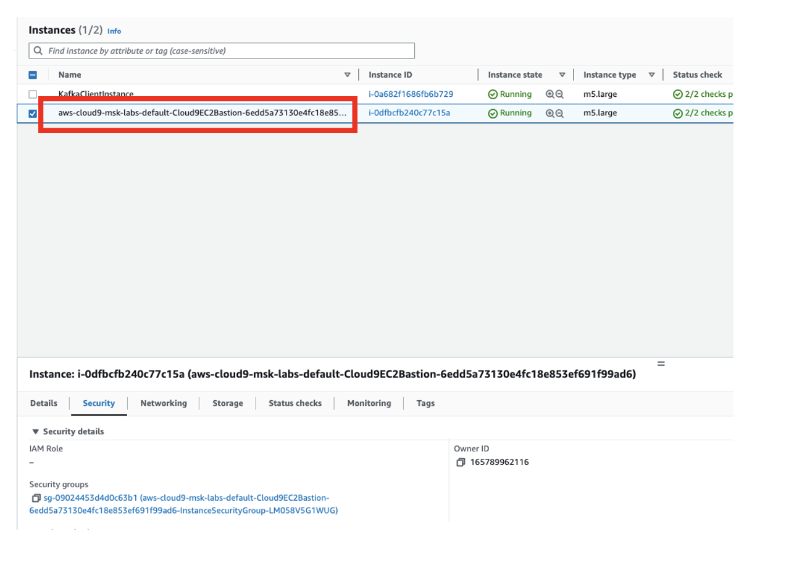 5. Go back to the MSK console. Select Properties scroll down, and under Networking settings click on the security group. This will open the security group.
 6. From the security group, click on Edit inbound rules.
6. From the security group, click on Edit inbound rules.
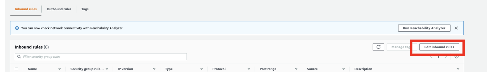 7. Click on Add rule with the following configuration.
- Type: All TCP
- Protocol: TCP
- Port range: 0-65535
- Source type: Custom
- Source: Paste the security group that you copied from the EC2 console
 8. Now we will be creating a sample topic using cloud9 host.
8. Now we will be creating a sample topic using cloud9 host.
9. Open Cloud9 , Click open beside the host msk-labs-default-Cloud9EC2Bastion
10. Click on icon (+), choose New Terminal [Please check the below screenshot]
11. In the above terminal, first we are going to create a MSK Topic.
To create a Kafka Topic:
Run the following command, replacing BootstrapServerString with one of the broker endpoints that you obtained in the previous step.
path-to-your-kafka-installation/bin/kafka-topics.sh --create --bootstrap-server BootstrapServerString --replication-factor 3 --partitions 1 --topic MSKTopicName
Example command:
kafka_2.12-2.6.2/bin/kafka-topics.sh --create --bootstrap-server b-1.mskclustermsklabsdefa.1je9hf.c21.kafka.us-east-1.amazonaws.com:9092 --replication-factor 3 --partitions 1 --topic orders
If the command succeeds, you see the following message: Created topic orders.

Produce and consume data¶
To produce and consume messages, in the above terminal itself we will be running the following command to start a console producer.
To produce data to a Kafka Topic: Replace BootstrapServerString with the plaintext connection string that you obtained in create topic
path-to-your-kafka-installation/bin/kafka-console-producer.sh --broker-list BootstrapServerString --producer.config client.properties --topic MSKTopicName
Example command:
kafka_2.12-2.6.2/bin/kafka-console-producer.sh --broker-list b-1.mskclustermsklabsdefa.1je9hf.c21.kafka.us-east-1.amazonaws.com:9092 --topic orders

Enter the following data, and press Enter.
Data:¶
- {"customer_id": "000","item_id":1}
- {"customer_id": "abe","item_id":2}
- {"customer_id": "def","item_id":3}
- {"customer_id": "ghi","item_id":4}
- {"customer_id": "jkl","item_id":5}
- {"customer_id": "mno","item_id":6}
- {"customer_id": "pqr","item_id":7}
- {"customer_id": "rst","item_id":8}
- {"customer_id": "uvw","item_id":9}
- {"customer_id": "xyz","item_id":10}
- {"customer_id": "000","item_id":11}
- {"customer_id": "abe","item_id":12}
- {"customer_id": "000","item_id":13}
Note: Every time you enter a line and press Enter, that line is sent to your Apache Kafka cluster as a separate message.
To consume data from a Kafka Topic¶
In the below terminal, we will be running the following command to start a console consumer.
Replace BootstrapServerString with the plaintext connection string that you saved earlier.
path-to-your-kafka-installation/bin/kafka-console-consumer.sh --bootstrap-server BootstrapServerString --topic MSKTopicName --from-beginning
Example command:
kafka_2.12-2.6.2/bin/kafka-console-consumer.sh --bootstrap-server b-1.mskclustermsklabsdefa.1je9hf.c21.kafka.us-east-1.amazonaws.com:9092 --topic orders --from-beginning
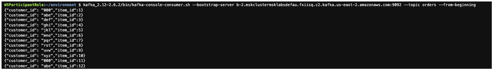
You start seeing the messages you entered earlier when you used the console producer command.